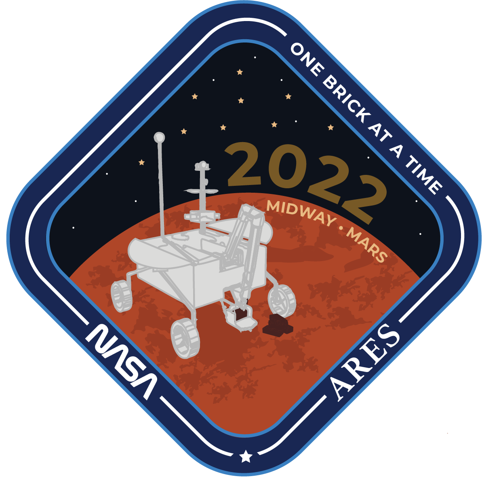

NASA ARES (Automated, Reconnaissance, Exploration and Sampling) Mission Patch
The ARES team at NASA wanted a patch that would represent their Mars 2022 mission, One brick at a time. By using the rover they designed and by implementing their ideas into the patch, we were able to provide a design that portrays what their work is about, sending their rover, Diversity, to Mars in a modern way.
Client: NASA L'SPACE Team ARES
Tools: Illustrator, Photoshop
